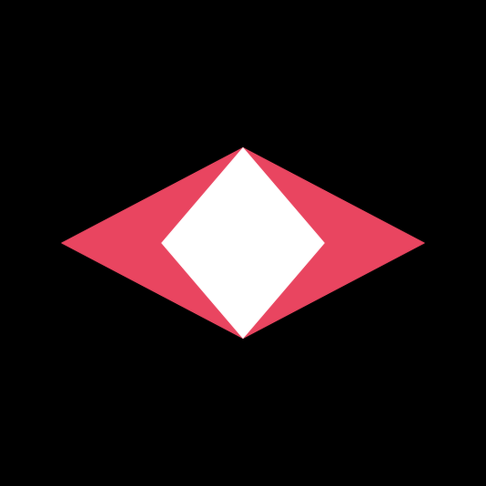

カメラ映像をAIがリアルタイムに解析し、 映像内のイベントをOSCで外部アプリケーションに通知するデスクトップアプリ。 Pure Data、TouchDesigner、Max、Ableton等と連携して、 インタラクティブな作品やパフォーマンスを実現します。
A desktop app that analyzes camera footage with AI in real-time and notifies external applications of visual events via OSC. Connect with Pure Data, TouchDesigner, Max, Ableton and more for interactive installations and performances.
用途に応じて3つの画像認識AIを切り替え
Choose the right AI engine for your use case
カメラ映像をAIがリアルタイムにテキスト化。登録した状況との意味的類似度を計算し、閾値を超えるとトリガー発火。
Real-time AI image captioning. Computes semantic similarity with registered triggers and fires when threshold is exceeded.
手（21ランドマーク/手、8ジェスチャー）と顔（32ランドマーク）をリアルタイム検出。
Real-time hand (21 landmarks, 8 gestures) and face (32 landmarks) tracking.
Google Teachable Machineで学習したカスタムモデルをROIごとに推論。
Run custom Teachable Machine models on each ROI region.
全モード共通の機能
Features available across all modes
カメラ映像上に複数のROIを描画。BLIP/TMモードで各領域を独立して処理。
Draw multiple ROIs on camera feed. Each region processed independently in BLIP/TM modes.
全モードからOSCで外部アプリに通知。Pure Data、TouchDesigner、Max、Ableton等と連携。
All modes send OSC to external apps. Works with Pure Data, TouchDesigner, Max, Ableton, etc.
OSCモニター、ログ、類似度バーをダッシュボードでリアルタイム表示。
OSC monitor, log, and similarity bars displayed in real-time dashboard.
BLIPモードはPyTorch MPS、MediaPipe/TMはWebGPU/WASMで高速推論。
BLIP uses PyTorch MPS, MediaPipe/TM use WebGPU/WASM for fast inference.
こんな用途に
Example applications
映像中の状況変化に応じて音響・照明を制御
Control sound/lighting based on scene changes
クロスモーダル知覚実験のパイプライン構築
Build cross-modal perception experiment pipelines
手や顔のトラッキングでPd/Abletonを制御
Control Pd/Ableton with hand/face tracking
カスタムモデルで特定の物体・状況を検知
Detect specific objects/situations with custom models
方法1: ビルド済みアプリをダウンロード
Option 1: Download pre-built app
Releases から .dmg をダウンロードして起動するだけ。
Download .dmg from Releases and launch.
方法2: ソースから実行
Option 2: Run from source
git clone https://github.com/634nakajima/sightcue.git
cd sightcue
npm install
cd python && pip install -r requirements.txt && cd ..
npm start
※ BLIPモードを使う場合のみPython環境が必要です。MediaPipe/TMモードはPython不要。
* Python environment only needed for BLIP mode. MediaPipe/TM modes work without Python.